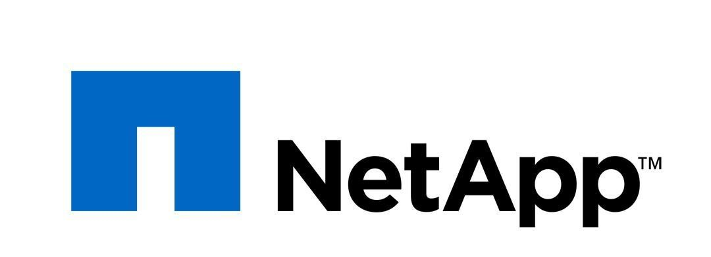

인공지능 사례
하이브리드 클라우드 환경의 데이터와 관련하여 최고 권위자인 NetApp은 데이터 액세스, 관리 및 제어의 가치를 잘 압니다. NetApp® Data Fabric은 에지 장치, 데이터 센터 및 다양한 하이퍼스케일 클라우드를 아우르는 통합 데이터 관리 환경을 제공합니다. Data Fabric은 모든 규모의 조직에서 중요한 애플리케이션을 빠르게 실행하고, 데이터 가시성을 확보하며, 데이터 보호를 간소화하고, 운영 민첩성을 높일 수 있도록 지원합니다.
NetApp AI 솔루션은 다음과 같은 주요 구성 요소를 기반으로 합니다.

- ONTAP® 소프트웨어는 온프레미스와 하이브리드 클라우드 모두에서 AI 및 딥 러닝을 지원합니다.
- AFF All-Flash 시스템은 AI 및 딥 러닝 워크로드를 빠르게 처리하여 성능 병목 현상을 제거합니다.
- ONTAP Select 소프트웨어는 IoT 장치 및 집계 포인트를 사용하여 에지에서 데이터를 효율적으로 수집할 수 있도록 지원합니다.
- Cloud Volumes를 사용하면 새로운 프로젝트의 프로토타입을 빠르게 만들고 AI 데이터를 클라우드 간에 원활하게 이동할 수 있습니다.
이에 더해 NetApp은 빅데이터 분석과 인공 지능을 자체 제품 및 서비스에 통합하기 시작했습니다. 예를 들어 Active IQ®는 수십억 개의 데이터 포인트, 예측 분석 및 강력한 머신 러닝을 사용하여 복잡한 IT 환경에 필요한 사전 예방적 고객 지원 권장안을 제공합니다. Active IQ는 다양한 사용 사례에 AI 솔루션을 구축할 때 사용하는 것과 동일한 NetApp 제품 및 기술을 사용하여 구축된 하이브리드 클라우드 애플리케이션입니다.